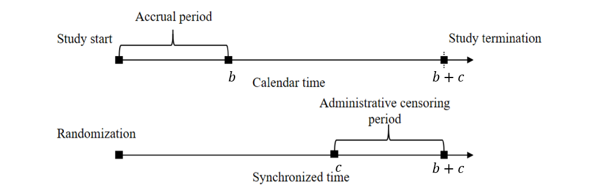

Chapter 6 - Sample Size Calculation and Study Design
Department of Biostatistics & Medical Informatics
University of Wisconsin-Madison
Sample size for Cox model and RMST
Impact of study design and censoring
An example using pilot study
\[\newcommand{\d}{{\rm d}}\] \[\newcommand{\T}{{\rm T}}\] \[\newcommand{\dd}{{\rm d}}\] \[\newcommand{\pr}{{\rm pr}}\] \[\newcommand{\var}{{\rm var}}\] \[\newcommand{\se}{{\rm se}}\] \[\newcommand{\indep}{\perp \!\!\! \perp}\] \[\newcommand{\Pn}{n^{-1}\sum_{i=1}^n}\]

# ------ integrand function --------------------------------
zeta_integrand <- function(t, tau, lambda0,lambdaL, b, c){
integrand <- (exp(- lambda0 * t) - exp( - lambda0 * tau))^2*
exp(lambda0 * t)/(Gfun(t, lambdaL, b, c) * lambda0)
return(integrand)
}
# ------ numerical integration by integrate() --------------
zeta_fun <- function(tau, lambda0, lambdaL, b, c){
f <- function(t){
return(zeta_integrand(t, tau, lambda0, lambdaL, b, c))
}
zeta <- integrate(f, lower = 0, upper = tau)
return(zeta$value)
}npsurvSS (Yung and Liu, 2020)
# Set up the two groups
control <- create_arm(
# Parameter set-up for control
)
treatment <- create_arm(
# Parameter set-up for treatment
)
# Compute sample size
size_two_arm(control, treatment,
test = list(list(test="weighted logrank"), # Log-rank test
list(test="rmst difference", milestone=3), # 3y-RMST
list(test="rmst difference", milestone=5)) # 5y-RMST
)